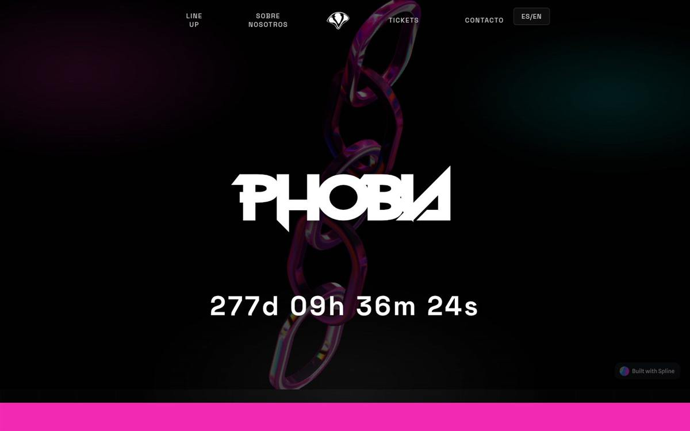

Rol
Marca · Diseño web · Dirección de arte
Identidad y web para un techno fest en Fuengirola. Proyecto académico en grupo: naming, sistema visual y experiencia digital con energía nocturna.

Crear la personalidad de un festival ficticio de techno: agresivo, memorable y creíble. Había que definir tono de voz, paleta, tipografía y una web que vendiera la noche antes de que empezara.